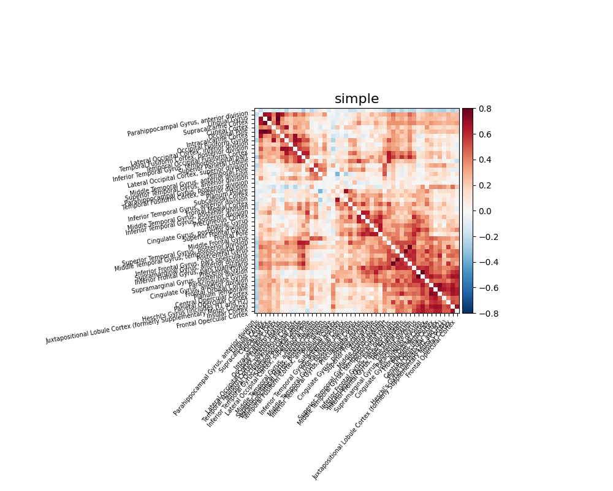

Note
Click here to download the full example code or to run this example in your browser via Binder
9.4.10. Extracting signals from a brain parcellation¶
Here we show how to extract signals from a brain parcellation and compute a correlation matrix.
We also show the importance of defining good confounds signals: the
first correlation matrix is computed after regressing out simple
confounds signals: movement regressors, white matter and CSF signals, …
The second one is without any confounds: all regions are connected to each
other. Finally we demonstrated the functionality of
nilearn.interfaces.fmriprep.load_confounds to flexibly select confound
variables from fMRIPrep outputs while following some implementation
guideline of fMRIPrep confounds documentation
https://fmriprep.org/en/stable/outputs.html#confounds.
One reference that discusses the importance of confounds is Varoquaux and Craddock, Learning and comparing functional connectomes across subjects, NeuroImage 2013.
This is just a code example, see the corresponding section in the documentation for more.
Note
This example needs SciPy >= 1.0.0 for the reordering of the matrix.
9.4.10.1. Retrieve the atlas and the data¶
from nilearn import datasets
dataset = datasets.fetch_atlas_harvard_oxford('cort-maxprob-thr25-2mm')
atlas_filename = dataset.maps
labels = dataset.labels
print('Atlas ROIs are located in nifti image (4D) at: %s' %
atlas_filename) # 4D data
# One subject of brain development fmri data
data = datasets.fetch_development_fmri(n_subjects=1, reduce_confounds=True)
fmri_filenames = data.func[0]
reduced_confounds = data.confounds[0] # This is a preselected set of confounds
Out:
Atlas ROIs are located in nifti image (4D) at: <class 'nibabel.nifti1.Nifti1Image'>
data shape (91, 109, 91)
affine:
[[ 2. 0. 0. -90.]
[ 0. 2. 0. -126.]
[ 0. 0. 2. -72.]
[ 0. 0. 0. 1.]]
metadata:
<class 'nibabel.nifti1.Nifti1Header'> object, endian='<'
sizeof_hdr : 348
data_type : b''
db_name : b''
extents : 0
session_error : 0
regular : b''
dim_info : 0
dim : [ 3 91 109 91 1 1 1 1]
intent_p1 : 0.0
intent_p2 : 0.0
intent_p3 : 0.0
intent_code : none
datatype : uint8
bitpix : 8
slice_start : 0
pixdim : [1. 2. 2. 2. 1. 1. 1. 1.]
vox_offset : 0.0
scl_slope : nan
scl_inter : nan
slice_end : 0
slice_code : unknown
xyzt_units : 0
cal_max : 0.0
cal_min : 0.0
slice_duration : 0.0
toffset : 0.0
glmax : 0
glmin : 0
descrip : b''
aux_file : b''
qform_code : unknown
sform_code : aligned
quatern_b : 0.0
quatern_c : 0.0
quatern_d : 0.0
qoffset_x : -90.0
qoffset_y : -126.0
qoffset_z : -72.0
srow_x : [ 2. 0. 0. -90.]
srow_y : [ 0. 2. 0. -126.]
srow_z : [ 0. 0. 2. -72.]
intent_name : b''
magic : b'n+1'
9.4.10.2. Extract signals on a parcellation defined by labels¶
Using the NiftiLabelsMasker
from nilearn.input_data import NiftiLabelsMasker
masker = NiftiLabelsMasker(labels_img=atlas_filename, standardize=True,
memory='nilearn_cache', verbose=5)
# Here we go from nifti files to the signal time series in a numpy
# array. Note how we give confounds to be regressed out during signal
# extraction
time_series = masker.fit_transform(fmri_filenames, confounds=reduced_confounds)
Out:
[NiftiLabelsMasker.fit_transform] loading data from Nifti1Image(
shape=(91, 109, 91),
affine=array([[ 2., 0., 0., -90.],
[ 0., 2., 0., -126.],
[ 0., 0., 2., -72.],
[ 0., 0., 0., 1.]])
)
Resampling labels
________________________________________________________________________________
[Memory] Calling nilearn.input_data.base_masker.filter_and_extract...
filter_and_extract('/home/circleci/nilearn_data/development_fmri/development_fmri/sub-pixar123_task-pixar_space-MNI152NLin2009cAsym_desc-preproc_bold.nii.gz',
<nilearn.input_data.nifti_labels_masker._ExtractionFunctor object at 0x7f8284ba9580>,
{ 'background_label': 0,
'detrend': False,
'dtype': None,
'high_pass': None,
'high_variance_confounds': False,
'labels': None,
'labels_img': <nibabel.nifti1.Nifti1Image object at 0x7f8284b6f490>,
'low_pass': None,
'mask_img': None,
'reports': True,
'smoothing_fwhm': None,
'standardize': True,
'standardize_confounds': True,
'strategy': 'mean',
't_r': None,
'target_affine': None,
'target_shape': None}, confounds=[ '/home/circleci/nilearn_data/development_fmri/development_fmri/sub-pixar123_task-pixar_desc-reducedConfounds_regressors.tsv'], sample_mask=None, dtype=None, memory=Memory(location=nilearn_cache/joblib), memory_level=1, verbose=5)
[NiftiLabelsMasker.transform_single_imgs] Loading data from /home/circleci/nilearn_data/development_fmri/development_fmri/sub-pixar123_task-pixar_space-MNI152NLin2009cAsym_desc-preproc_bold.nii.gz
[NiftiLabelsMasker.transform_single_imgs] Extracting region signals
[NiftiLabelsMasker.transform_single_imgs] Cleaning extracted signals
_______________________________________________filter_and_extract - 1.1s, 0.0min
9.4.10.3. Compute and display a correlation matrix¶
from nilearn.connectome import ConnectivityMeasure
correlation_measure = ConnectivityMeasure(kind='correlation')
correlation_matrix = correlation_measure.fit_transform([time_series])[0]
# Plot the correlation matrix
import numpy as np
from nilearn import plotting
# Make a large figure
# Mask the main diagonal for visualization:
np.fill_diagonal(correlation_matrix, 0)
# The labels we have start with the background (0), hence we skip the
# first label
# matrices are ordered for block-like representation
plotting.plot_matrix(correlation_matrix, figure=(10, 8), labels=labels[1:],
vmax=0.8, vmin=-0.8, title="Confounds",
reorder=True)
Out:
<matplotlib.image.AxesImage object at 0x7f8294cd9970>
9.4.10.4. Extract signals and compute a connectivity matrix without confounds removal¶
After covering the basic of signal extraction and functional connectivity matrix presentation, let’s look into the impact of confounds to fMRI signal and functional connectivity. Firstly let’s find out what a functional connectivity matrix looks like without confound removal.
time_series = masker.fit_transform(fmri_filenames)
# Note how we did not specify confounds above. This is bad!
correlation_matrix = correlation_measure.fit_transform([time_series])[0]
np.fill_diagonal(correlation_matrix, 0)
plotting.plot_matrix(correlation_matrix, figure=(10, 8), labels=labels[1:],
vmax=0.8, vmin=-0.8, title='No confounds', reorder=True)
Out:
[NiftiLabelsMasker.fit_transform] loading data from Nifti1Image(
shape=(91, 109, 91),
affine=array([[ 2., 0., 0., -90.],
[ 0., 2., 0., -126.],
[ 0., 0., 2., -72.],
[ 0., 0., 0., 1.]])
)
________________________________________________________________________________
[Memory] Calling nilearn.input_data.base_masker.filter_and_extract...
filter_and_extract('/home/circleci/nilearn_data/development_fmri/development_fmri/sub-pixar123_task-pixar_space-MNI152NLin2009cAsym_desc-preproc_bold.nii.gz',
<nilearn.input_data.nifti_labels_masker._ExtractionFunctor object at 0x7f8284bfe610>,
{ 'background_label': 0,
'detrend': False,
'dtype': None,
'high_pass': None,
'high_variance_confounds': False,
'labels': None,
'labels_img': <nibabel.nifti1.Nifti1Image object at 0x7f8284b6f490>,
'low_pass': None,
'mask_img': None,
'reports': True,
'smoothing_fwhm': None,
'standardize': True,
'standardize_confounds': True,
'strategy': 'mean',
't_r': None,
'target_affine': None,
'target_shape': None}, confounds=None, sample_mask=None, dtype=None, memory=Memory(location=nilearn_cache/joblib), memory_level=1, verbose=5)
[NiftiLabelsMasker.transform_single_imgs] Loading data from /home/circleci/nilearn_data/development_fmri/development_fmri/sub-pixar123_task-pixar_space-MNI152NLin2009cAsym_desc-preproc_bold.nii.gz
[NiftiLabelsMasker.transform_single_imgs] Extracting region signals
[NiftiLabelsMasker.transform_single_imgs] Cleaning extracted signals
_______________________________________________filter_and_extract - 1.2s, 0.0min
<matplotlib.image.AxesImage object at 0x7f829886e580>
9.4.10.5. Load confounds from file using a flexible strategy with fmriprep interface¶
The nilearn.interfaces.fmriprep.load_confounds function provides
flexible parameters to retrieve the relevant columns from the TSV file
generated by fMRIPrep.
nilearn.interfaces.fmriprep.load_confounds ensures two things:
The correct regressors are selected with provided strategy, and
Volumes such as non-steady-state and/or high motion volumes are masked out correctly.
Let’s try a simple strategy removing motion, white matter signal, cerebrospinal fluid signal with high-pass filtering.
from nilearn.interfaces.fmriprep import load_confounds
confounds_simple, sample_mask = load_confounds(
fmri_filenames,
strategy=["high_pass", "motion", "wm_csf"],
motion="basic", wm_csf="basic")
print("The shape of the confounds matrix is:", confounds_simple.shape)
print(confounds_simple.columns)
time_series = masker.fit_transform(fmri_filenames,
confounds=confounds_simple,
sample_mask=sample_mask)
correlation_matrix = correlation_measure.fit_transform([time_series])[0]
np.fill_diagonal(correlation_matrix, 0)
plotting.plot_matrix(correlation_matrix, figure=(10, 8), labels=labels[1:],
vmax=0.8, vmin=-0.8, title='Motion, WM, CSF',
reorder=True)
Out:
The shape of the confounds matrix is: (168, 12)
Index(['cosine00', 'cosine01', 'cosine02', 'cosine03', 'csf', 'rot_x', 'rot_y',
'rot_z', 'trans_x', 'trans_y', 'trans_z', 'white_matter'],
dtype='object')
[NiftiLabelsMasker.fit_transform] loading data from Nifti1Image(
shape=(91, 109, 91),
affine=array([[ 2., 0., 0., -90.],
[ 0., 2., 0., -126.],
[ 0., 0., 2., -72.],
[ 0., 0., 0., 1.]])
)
________________________________________________________________________________
[Memory] Calling nilearn.input_data.base_masker.filter_and_extract...
filter_and_extract('/home/circleci/nilearn_data/development_fmri/development_fmri/sub-pixar123_task-pixar_space-MNI152NLin2009cAsym_desc-preproc_bold.nii.gz',
<nilearn.input_data.nifti_labels_masker._ExtractionFunctor object at 0x7f8295596fa0>,
{ 'background_label': 0,
'detrend': False,
'dtype': None,
'high_pass': None,
'high_variance_confounds': False,
'labels': None,
'labels_img': <nibabel.nifti1.Nifti1Image object at 0x7f8284b6f490>,
'low_pass': None,
'mask_img': None,
'reports': True,
'smoothing_fwhm': None,
'standardize': True,
'standardize_confounds': True,
'strategy': 'mean',
't_r': None,
'target_affine': None,
'target_shape': None}, confounds=[ cosine00 cosine01 cosine02 ... trans_y trans_z white_matter
0 0.109104 0.109090 0.109066 ... -0.026078 0.055006 -0.876886
1 0.109066 0.108937 0.108723 ... -0.027587 0.049458 -1.418909
2 0.108990 0.108632 0.108038 ... -0.019085 0.075787 -1.540842
3 0.108875 0.108176 0.107012 ... -0.023900 0.053022 -1.922085
4 0.108723 0.107567 0.105651 ... -0.033396 0.077764 -1.843388
.. ... ... ... ... ... ... ...
163 -0.108723 0.107567 -0.105651 ... 0.064873 -0.022169 1.221217
164 -0.108875 0.108176 -0.107012 ... -0.064266 -0.042248 1.237783
165 -0.108990 0.108632 -0.108038 ... 0.053241 -0.029500 1.590905
166 -0.109066 0.108937 -0.108723 ... -0.081559 -0.034236 1.122246
167 -0.109104 0.109090 -0.109066 ... 0.069287 -0.007294 1.000828
[168 rows x 12 columns]], sample_mask=None, dtype=None, memory=Memory(location=nilearn_cache/joblib), memory_level=1, verbose=5)
[NiftiLabelsMasker.transform_single_imgs] Loading data from /home/circleci/nilearn_data/development_fmri/development_fmri/sub-pixar123_task-pixar_space-MNI152NLin2009cAsym_desc-preproc_bold.nii.gz
[NiftiLabelsMasker.transform_single_imgs] Extracting region signals
[NiftiLabelsMasker.transform_single_imgs] Cleaning extracted signals
_______________________________________________filter_and_extract - 1.2s, 0.0min
<matplotlib.image.AxesImage object at 0x7f8297245400>
9.4.10.6. Motion-based scrubbing¶
With a scrubbing-based strategy,
load_confounds returns a sample_mask
that removes the index of volumes exceeding the framewise displacement and
standardised DVARS threshold, and all the continuous segment with less than
five volumes. Before applying scrubbing, it’s important to access the
percentage of volumns scrubbed. Scrubbing is not a suitable strategy for
datasets with too many high motion subjects.
On top of the simple strategy above, let’s add scrubbing to our
strategy.
confounds_scrub, sample_mask = load_confounds(
fmri_filenames,
strategy=["high_pass", "motion", "wm_csf", "scrub"],
motion="basic", wm_csf="basic",
scrub=5, fd_threshold=0.2, std_dvars_threshold=3)
print("After scrubbing, {} out of {} volumes remains".format(
sample_mask.shape[0], confounds_scrub.shape[0]))
print("The shape of the confounds matrix is:", confounds_simple.shape)
print(confounds_scrub.columns)
time_series = masker.fit_transform(fmri_filenames,
confounds=confounds_scrub,
sample_mask=sample_mask)
correlation_matrix = correlation_measure.fit_transform([time_series])[0]
np.fill_diagonal(correlation_matrix, 0)
plotting.plot_matrix(correlation_matrix, figure=(10, 8), labels=labels[1:],
vmax=0.8, vmin=-0.8,
title='Motion, WM, CSF, Scrubbing',
reorder=True)
Out:
After scrubbing, 119 out of 168 volumes remains
The shape of the confounds matrix is: (168, 12)
Index(['cosine00', 'cosine01', 'cosine02', 'cosine03', 'csf', 'rot_x', 'rot_y',
'rot_z', 'trans_x', 'trans_y', 'trans_z', 'white_matter'],
dtype='object')
[NiftiLabelsMasker.fit_transform] loading data from Nifti1Image(
shape=(91, 109, 91),
affine=array([[ 2., 0., 0., -90.],
[ 0., 2., 0., -126.],
[ 0., 0., 2., -72.],
[ 0., 0., 0., 1.]])
)
________________________________________________________________________________
[Memory] Calling nilearn.input_data.base_masker.filter_and_extract...
filter_and_extract('/home/circleci/nilearn_data/development_fmri/development_fmri/sub-pixar123_task-pixar_space-MNI152NLin2009cAsym_desc-preproc_bold.nii.gz',
<nilearn.input_data.nifti_labels_masker._ExtractionFunctor object at 0x7f82995e87f0>,
{ 'background_label': 0,
'detrend': False,
'dtype': None,
'high_pass': None,
'high_variance_confounds': False,
'labels': None,
'labels_img': <nibabel.nifti1.Nifti1Image object at 0x7f8284b6f490>,
'low_pass': None,
'mask_img': None,
'reports': True,
'smoothing_fwhm': None,
'standardize': True,
'standardize_confounds': True,
'strategy': 'mean',
't_r': None,
'target_affine': None,
'target_shape': None}, confounds=[ cosine00 cosine01 cosine02 ... trans_y trans_z white_matter
0 0.097319 0.110228 0.100980 ... -0.024472 0.048861 -0.796008
1 0.097281 0.110075 0.100637 ... -0.025982 0.043313 -1.338031
2 0.097205 0.109770 0.099952 ... -0.017480 0.069643 -1.459963
3 0.097090 0.109313 0.098926 ... -0.022294 0.046877 -1.841207
4 0.096938 0.108705 0.097565 ... -0.031791 0.071620 -1.762509
.. ... ... ... ... ... ... ...
163 -0.120508 0.108705 -0.113737 ... 0.066478 -0.028314 1.302095
164 -0.120661 0.109313 -0.115099 ... -0.062660 -0.048393 1.318661
165 -0.120775 0.109770 -0.116124 ... 0.054846 -0.035645 1.671784
166 -0.120851 0.110075 -0.116809 ... -0.079953 -0.040381 1.203124
167 -0.120889 0.110228 -0.117152 ... 0.070892 -0.013439 1.081706
[168 rows x 12 columns]], sample_mask=array([ 0, ..., 152]), dtype=None, memory=Memory(location=nilearn_cache/joblib), memory_level=1, verbose=5)
[NiftiLabelsMasker.transform_single_imgs] Loading data from /home/circleci/nilearn_data/development_fmri/development_fmri/sub-pixar123_task-pixar_space-MNI152NLin2009cAsym_desc-preproc_bold.nii.gz
[NiftiLabelsMasker.transform_single_imgs] Extracting region signals
[NiftiLabelsMasker.transform_single_imgs] Cleaning extracted signals
_______________________________________________filter_and_extract - 1.2s, 0.0min
<matplotlib.image.AxesImage object at 0x7f82971516a0>
9.4.10.7. The impact of global signal removal¶
Global signal removes the grand mean from your signal. The benefit is that it can remove impacts of physiological artifacts with minimal impact on the degrees of freedom. The downside is that one cannot get insight into variance explained by certain sources of noise. Now let’s add global signal to the simple strategy and see its impact.
confounds_minimal_no_gsr, sample_mask = load_confounds(
fmri_filenames,
strategy=["high_pass", "motion", "wm_csf", "global_signal"],
motion="basic", wm_csf="basic", global_signal="basic")
print("The shape of the confounds matrix is:",
confounds_minimal_no_gsr.shape)
print(confounds_minimal_no_gsr.columns)
time_series = masker.fit_transform(fmri_filenames,
confounds=confounds_minimal_no_gsr,
sample_mask=sample_mask)
correlation_matrix = correlation_measure.fit_transform([time_series])[0]
np.fill_diagonal(correlation_matrix, 0)
plotting.plot_matrix(correlation_matrix, figure=(10, 8), labels=labels[1:],
vmax=0.8, vmin=-0.8,
title='Motion, WM, CSF, GSR',
reorder=True)
Out:
The shape of the confounds matrix is: (168, 13)
Index(['cosine00', 'cosine01', 'cosine02', 'cosine03', 'csf', 'global_signal',
'rot_x', 'rot_y', 'rot_z', 'trans_x', 'trans_y', 'trans_z',
'white_matter'],
dtype='object')
[NiftiLabelsMasker.fit_transform] loading data from Nifti1Image(
shape=(91, 109, 91),
affine=array([[ 2., 0., 0., -90.],
[ 0., 2., 0., -126.],
[ 0., 0., 2., -72.],
[ 0., 0., 0., 1.]])
)
________________________________________________________________________________
[Memory] Calling nilearn.input_data.base_masker.filter_and_extract...
filter_and_extract('/home/circleci/nilearn_data/development_fmri/development_fmri/sub-pixar123_task-pixar_space-MNI152NLin2009cAsym_desc-preproc_bold.nii.gz',
<nilearn.input_data.nifti_labels_masker._ExtractionFunctor object at 0x7f829546b5e0>,
{ 'background_label': 0,
'detrend': False,
'dtype': None,
'high_pass': None,
'high_variance_confounds': False,
'labels': None,
'labels_img': <nibabel.nifti1.Nifti1Image object at 0x7f8284b6f490>,
'low_pass': None,
'mask_img': None,
'reports': True,
'smoothing_fwhm': None,
'standardize': True,
'standardize_confounds': True,
'strategy': 'mean',
't_r': None,
'target_affine': None,
'target_shape': None}, confounds=[ cosine00 cosine01 cosine02 ... trans_y trans_z white_matter
0 0.109104 0.109090 0.109066 ... -0.026078 0.055006 -0.876886
1 0.109066 0.108937 0.108723 ... -0.027587 0.049458 -1.418909
2 0.108990 0.108632 0.108038 ... -0.019085 0.075787 -1.540842
3 0.108875 0.108176 0.107012 ... -0.023900 0.053022 -1.922085
4 0.108723 0.107567 0.105651 ... -0.033396 0.077764 -1.843388
.. ... ... ... ... ... ... ...
163 -0.108723 0.107567 -0.105651 ... 0.064873 -0.022169 1.221217
164 -0.108875 0.108176 -0.107012 ... -0.064266 -0.042248 1.237783
165 -0.108990 0.108632 -0.108038 ... 0.053241 -0.029500 1.590905
166 -0.109066 0.108937 -0.108723 ... -0.081559 -0.034236 1.122246
167 -0.109104 0.109090 -0.109066 ... 0.069287 -0.007294 1.000828
[168 rows x 13 columns]], sample_mask=None, dtype=None, memory=Memory(location=nilearn_cache/joblib), memory_level=1, verbose=5)
[NiftiLabelsMasker.transform_single_imgs] Loading data from /home/circleci/nilearn_data/development_fmri/development_fmri/sub-pixar123_task-pixar_space-MNI152NLin2009cAsym_desc-preproc_bold.nii.gz
[NiftiLabelsMasker.transform_single_imgs] Extracting region signals
[NiftiLabelsMasker.transform_single_imgs] Cleaning extracted signals
_______________________________________________filter_and_extract - 1.2s, 0.0min
<matplotlib.image.AxesImage object at 0x7f8293551790>
9.4.10.8. Using predefined strategies¶
Instead of customising the strategy through
nilearn.interfaces.fmriprep.load_confounds, one can use a predefined
strategy with nilearn.interfaces.fmriprep.load_confounds_strategy.
Based on the confound variables generated through fMRIPrep, and past
benchmarks studies (1, 2): simple,
scrubbing, compcor, ica_aroma.
The following examples shows how to use the simple strategy and overwrite
the motion default to basic.
from nilearn.interfaces.fmriprep import load_confounds_strategy
# use default parameters
confounds, sample_mask = load_confounds_strategy(
fmri_filenames, denoise_strategy="simple", motion="basic"
)
time_series = masker.fit_transform(fmri_filenames,
confounds=confounds,
sample_mask=sample_mask)
correlation_matrix = correlation_measure.fit_transform([time_series])[0]
np.fill_diagonal(correlation_matrix, 0)
plotting.plot_matrix(correlation_matrix, figure=(10, 8), labels=labels[1:],
vmax=0.8, vmin=-0.8,
title='simple',
reorder=True)
# add optional parameter global signal
confounds, sample_mask = load_confounds_strategy(
fmri_filenames, denoise_strategy="simple",
motion="basic", global_signal="basic"
)
time_series = masker.fit_transform(fmri_filenames,
confounds=confounds,
sample_mask=sample_mask)
correlation_matrix = correlation_measure.fit_transform([time_series])[0]
np.fill_diagonal(correlation_matrix, 0)
plotting.plot_matrix(correlation_matrix, figure=(10, 8), labels=labels[1:],
vmax=0.8, vmin=-0.8,
title='simple with global signal',
reorder=True)
plotting.show()
- 
Out:
[NiftiLabelsMasker.fit_transform] loading data from Nifti1Image(
shape=(91, 109, 91),
affine=array([[ 2., 0., 0., -90.],
[ 0., 2., 0., -126.],
[ 0., 0., 2., -72.],
[ 0., 0., 0., 1.]])
)
[Memory]11.2s, 0.2min : Loading filter_and_extract...
__________________________________filter_and_extract cache loaded - 0.0s, 0.0min
[NiftiLabelsMasker.fit_transform] loading data from Nifti1Image(
shape=(91, 109, 91),
affine=array([[ 2., 0., 0., -90.],
[ 0., 2., 0., -126.],
[ 0., 0., 2., -72.],
[ 0., 0., 0., 1.]])
)
[Memory]11.7s, 0.2min : Loading filter_and_extract...
__________________________________filter_and_extract cache loaded - 0.0s, 0.0min
9.4.10.9. References¶
- 1
Rastko Ciric, Daniel H. Wolf, Jonathan D. Power, David R. Roalf, Graham L. Baum, Kosha Ruparel, Russell T. Shinohara, Mark A. Elliott, Simon B. Eickhoff, Christos Davatzikos, Ruben C. Gur, Raquel E. Gur, Danielle S. Bassett, and Theodore D. Satterthwaite. Benchmarking of participant-level confound regression strategies for the control of motion artifact in studies of functional connectivity. NeuroImage, 154(1):174–187, 2017. doi:10.1016/j.neuroimage.2017.03.020.
- 2
Linden Parkes, Ben Fulcher, Murat Yücel, and Alex Fornito. An evaluation of the efficacy, reliability, and sensitivity of motion correction strategies for resting-state functional MRI. NeuroImage, 171:415–436, May 2018. doi:10.1016/j.neuroimage.2017.12.073.
Total running time of the script: ( 0 minutes 13.725 seconds)
Estimated memory usage: 408 MB